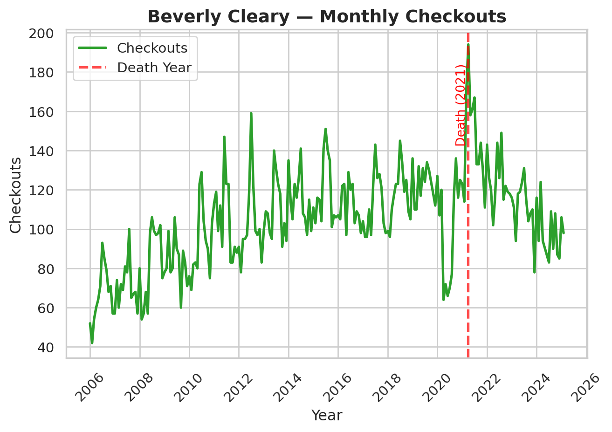
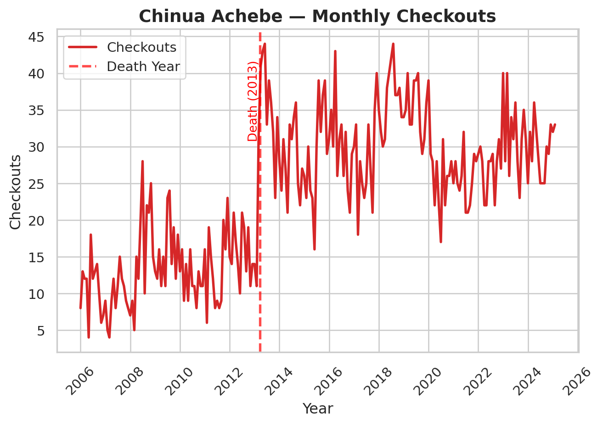
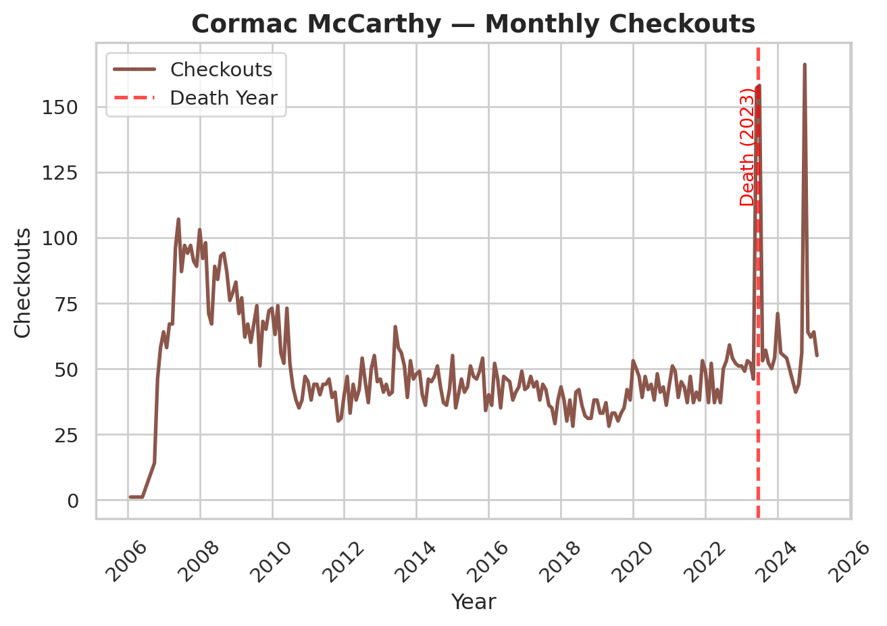
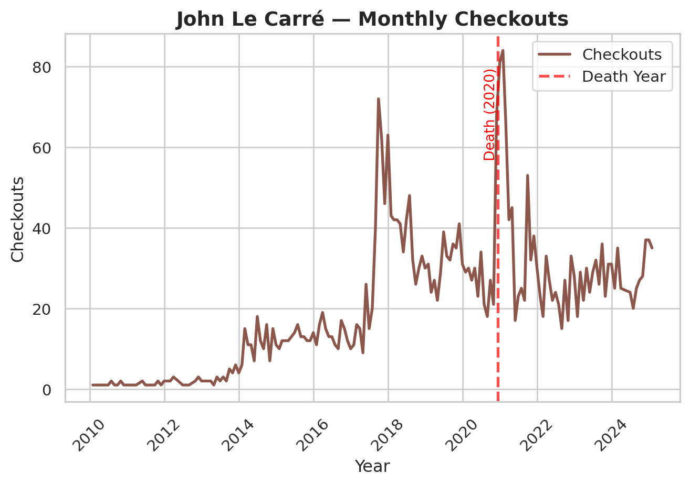
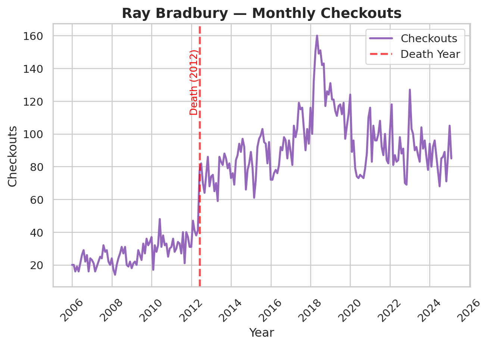
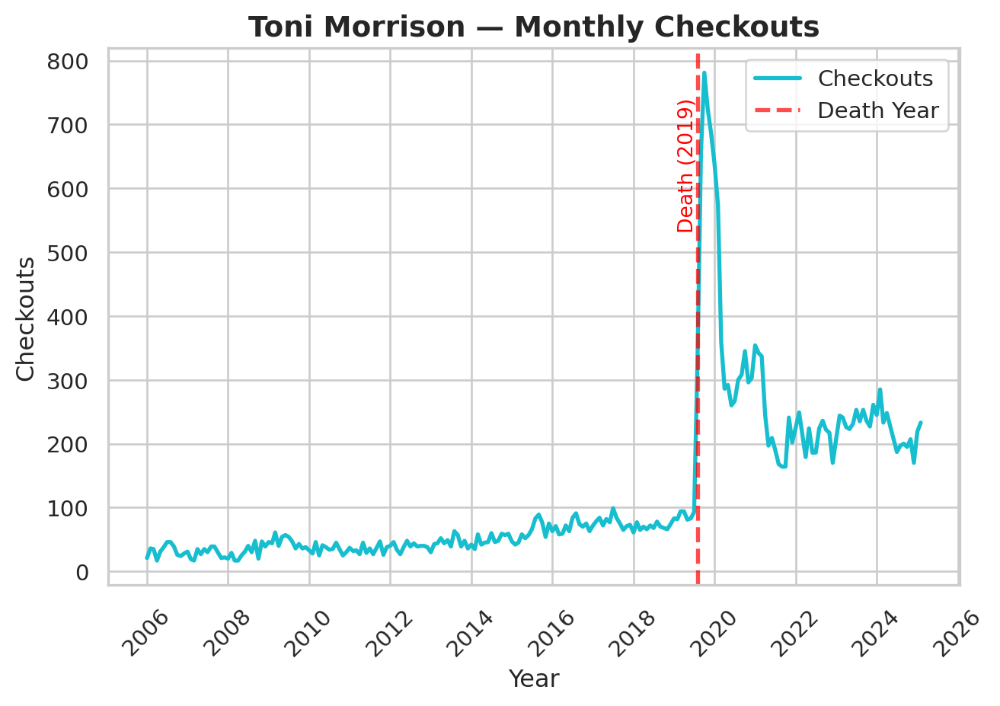
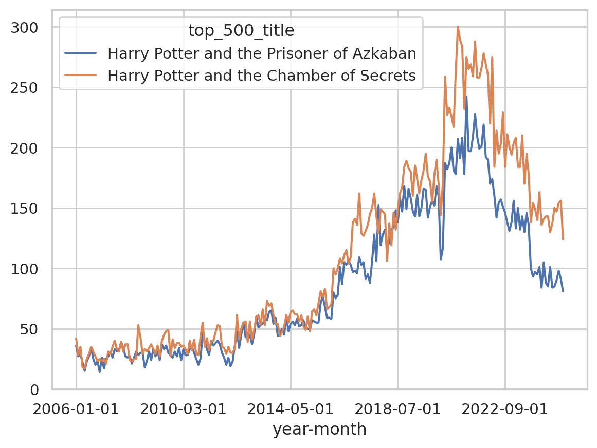
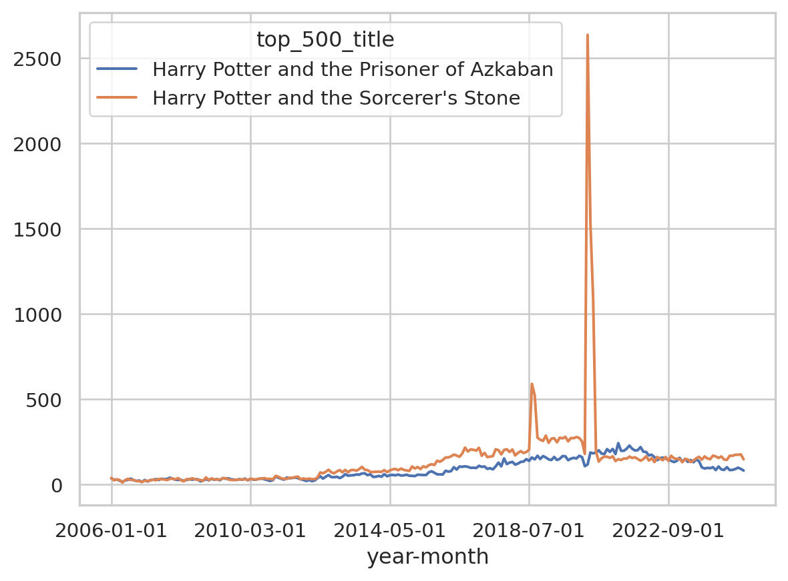
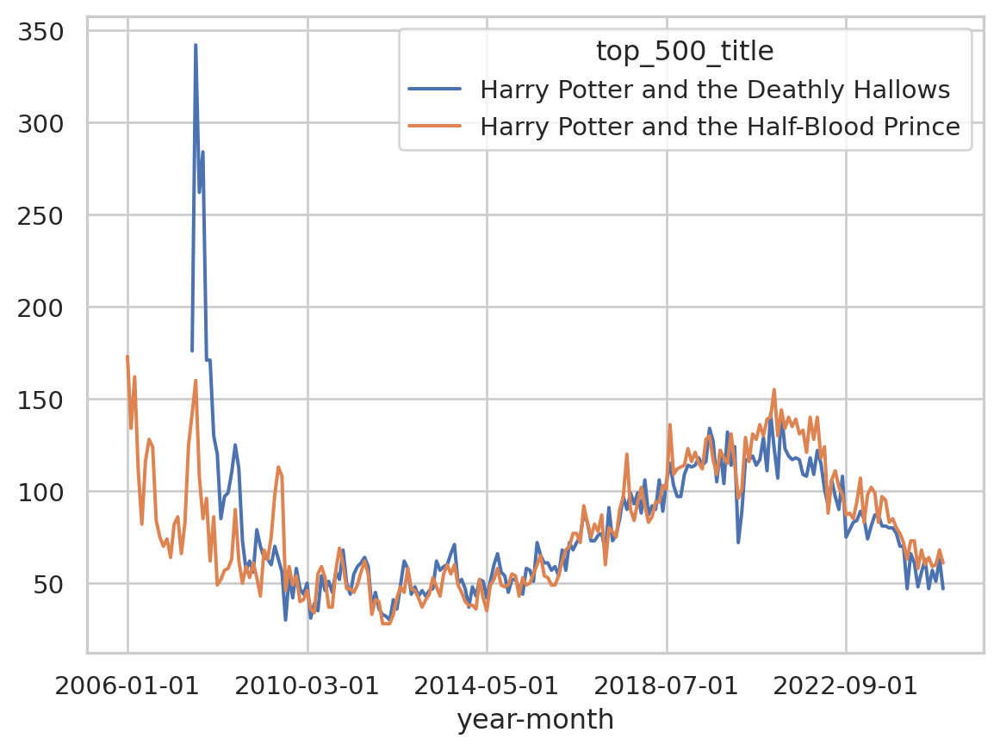
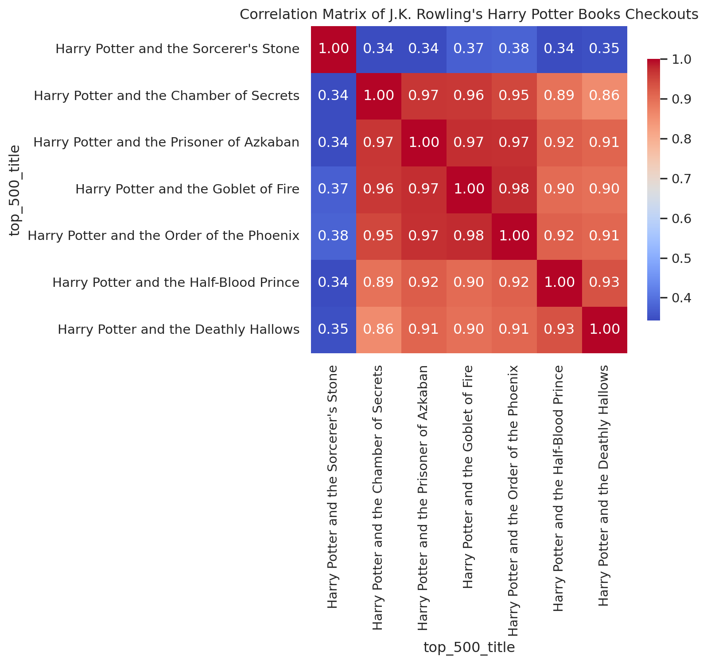

Introduction
This dataset contains library circulation information for books in the The Top 500 “Greatest” Novels list, the set of novels most widely held in libraries according to OCLC. The Seattle Public Library (SPL) Checkout Data is one of the only publically available sources on circulation and popularity of literary texts (Gupta, Christensen, and Walsh 2025), due to the unavailability of proprietary book sales data (Walsh 2022). The dataset presented here is a combination of both the top 500 “Greatest” novels dataset published on this site, and a mirrored version of the SPL Checkout Data recording checkouts from 2005 up till Feb 2025.
Dataset
Download Full Data
Download Table Data (including filtered options)
TipCreative Commons License
This work is licensed under CC BY 4.0

What’s in the data?
From the Seattle Public Library Checkout data, we inherit the following columns.
- UsageClass: Denotes if the item is “physical” or “digital.”
- CheckoutType: Denotes the vendor tool used to check out the item.
- MaterialType: Describes the type of item checked out (examples: book, song, movie, music, magazine).
- CheckoutYear: The 4-digit year of checkout for this record.
- CheckoutMonth: The month of checkout for this record.
- Checkouts: A count of the number of times the title was checked out within the “Checkout Month.”
- ISBN: A comma-separated list of ISBNs associated with the item record for the checkout.
- Title: The full title and subtitle of an individual item.
- Creator: The author or entity responsible for authoring the item according to the SPL.
- Subjects: The subject of the item as it appears in the catalog.
- Publisher: The publisher of the title.
- PublicationYear: The year from the catalog record in which the item was published, printed, or copyrighted.
The dataset contains extensive metadata information on the top 500 novels list, borrowed from our previous RDIC post.
NoteClick to view all metadata fields
Basic info on novels:
- TOP_500_RANK: Numeric rank of text in OCLC’s original Top 500 List.
- TOP_500_Title: Title of text, as recorded in OCLC’s original Top 500 List.
- AUTHOR: Author of text, as recorded in OCLC’s original Top 500 List.
- PUB_YEAR: Year of first publication of text, according to Wikipedia.
- ORIG_LANG: Original language of text, according to Wikipedia.
- GENRE: Genre of text, as recorded in OCLC’s original Top 500 List (filtered by the ‘Choose Genre’ dropdown).
Library holdings info:
- OCLC_HOLDINGS: Total physical library holdings listed in WorldCat for an individual work (OWI), according to Classify.
- OCLC_EHOLDINGS: Total digital library holdings listed in WorldCat for an individual work (OWI), according to OCLC.
- OCLC_TOTAL_EDITIONS: Total editions of an individual work–physical and digital–listed in WorldCat according to OCLC.
- OCLC_HOLDINGS_RANK: Numeric rank of text based on total holdings recorded in WorldCat.
- OCLC_EDITIONS_RANK: Numeric rank of text based on total number of editions recorded in WorldCat.
Online popularity info:
- GR_AVG_RATING: Average star rating for a text on Goodreads.
- GR_NUM_RATINGS: Total number of ratings for a text on Goodreads.
- GR_NUM_REVIEWS: Total number of reviews for a text on Goodreads.
- GR_AVG_RATING_RANK: Numeric rank of text based on average Goodreads rating.
- GR_NUM_RATINGS_RANK: Numeric rank of text based on overall number of ratings on Goodreads.
Unique Identifiers and URLS:
- OCLC_OWI: Work ID on OCLC. A work ID represents a cluster based on “author and title information from bibliographic and authority records.” A title can be represented by multiple clusters, and therefore multiple OWIs. More information about OCLC work clustering can be found here.
- AUTHOR_VIAF: Author VIAF ID.
- GR_URL: URL for text on Goodreads.
- WIKI_URL: URL for text on Wikipedia.
- PG_ENG_URL: URL for English-language text on Project Gutenberg.
- PG_ORIG_URL: URL for original-language text (where applicable) on Project Gutenberg.
- FULL_TEXT: Full text of the novel, if it is in the public domain.
Note that we provide two titles and two different author fields, one is sourced from the Top 500 Novels List, and the other from the SPL Checkout Data. Reconciling book data is difficult, and different versions and editions of the same text can have slightly different title and author variants.
Where Did The Data Come From? Who Collected It?
For more details on the Top 500 novel list, refer to the initial post written by Anna Preus and Aashna Sheth which summarizes the library criterion and processes used to generate the source list of texts in the first place. The SPL dataset was organized by David Christensen, Data Analysis Lead at the Seattle Public Library. The data from 2005 to 2016 is originally from the digital artwork, “Making Visible the Invisible,” by studios of George Legrady. To my knowledge, the SPL is the only library to release checkout data by item with this level of temporal detail in the United States. Their published data is a result of the Seattle Open Data Program, which is an initiative designed to increase transparency into city operations for the public. ## Why Was The Data Collected? How Is The Data Used?
While the SPL uses the data internally to help inform inventory, purchasing behavior, and specific programs, we as researchers are interested in using checkout data to study cultural trends at scale. Thus, the data collected here is a subset of the original SPL open checkout data, and part of an ongoing project to reveal the dynamics of literary popularity through the SPL checkout data. While a powerful resource, the SPL checkout data, like all book data, struggles with persistent book identifiers. The same underlying work can often have different editions, author name variants, and metadata. It is difficult to cluster different versions of the same underlying work together at scale, but we have experimented previously with using a combination of semi-automated methods and manual oversight to cluster smaller sized corpuses of interest (Gupta et al. 2025). The Top 500 Novels Dataset is compelling because it presents a set of works that have persisted in popularity and relevance well past publication date. These are exceptionally popular titles that have avoided the fate of the majority of books, which often fall out of circulation soon after publishing (Cohen 2018) (Sorensen 2007). Studying novels like these is useful to understand how popularity and reception is working for novels that are cultural touchstones.
How Was The Data Collected?
The SPL internal approach to capturing the initial data includes an anonymization process that keeps data collection disconnected from identifiable patrons. The library counts each checkout but uses a de-identification approach at the point of data capture to keep the data anonymous ensuring that even internal researchers can’t acess damaging personally identifiable information.
On our side, the most challnging task is merging and reconciling the messy SPL Checkout Data with the curated top 500 novels list.
To reconcile the SPL Checkout Data with the top 500 novel data, we employ a multi-step algorithm to capture all the records in the library data that may match one of the novels in our source list.
We first, manipulate the title and author fields in the SPL data to normalize against common variants. For example, many titles have “(unabridged)” appended to them, and many authors have a last name, first name formatting (e.g Collins, Suzanne). Once we’ve simplified the SPL Checkout Data, to simplified versions of title and creator, we group by those fields to reduce our dataframe down to about 800,000 unique titles.
We then run a two-stage algorithm to pair novels from the Top 500 list to checkout records. We iterate through all 500 of our novels and compare first the last name of the author to the creator field in the SPL, checking if the creator field contains the last name of the author somewhere in its text. We then use the Python RapidFuzz library to run a fuzzy matching of the top 500 title against the title field in the SPL data. We use the Partial Ratio algorithm which identifies the optimal alignment of the shorter string in the longer string. We use a threshold of 85.
For an example of how this algorithm is working, consider the novel Catching Fire by Suzanne Collins. A matching SPL record has the title as Catching Fire: (movie tie in edition). The Partial Ratio algorithm returns a perfect 100 match between this title and the true title, Catching Fire. Our algorithm is designed to have high recall, rather than precision. In other words, we would rather identify more matches that could be wrong, than miss matches that could be right. Our preference for recall over precision is because there are TONS of books in the dataset, once we have a list of matching records, we can manually look at matches to ensure accuracy. It is much more difficult to identify matches in the first place from over 800,000 unique titles!
Still, the recall of our algorithm will not be perfect, and we will miss some editions that should be clustered in. For example, alternate language editions that lack the English title will often fail the Fuzzy Match. For example, Stendhal’s The Red and the Black in French is titled Le Rouge et le Noir, which will not pass our fuzzy matching threshold (luckily we’re only missing 11 checkouts from the French edition).
Our algorithm returns matches for every single novel on our list! But because of our high recall approach, we need to filter out mismatches. For example, Khaled Hosseini’s A Thousands Splendid Suns got matched onto the record, And the Mountains Echoed by the Bestselling Author of the Kite Runner and a Thousand Splendid Suns. These types of cases require manual oversight to filter out.
Our approach has a couple of systematic failures besides weird edge cases. Book series where only the first entry is in the list (Artemis Fowl, Diary of a Wimpy Kid, The Maze Runner etc.) often return all the matching entries from the series, because each future title references the original title. These were excluded manually.
An interesting case we often see when matching library data to these popular novels is dealing with checked out titles that contain more than one text. Think the entire Lord of The Rings Trilogy in one large volume. We make the decision to map checkouts for the entire Lord of the Rings Trilogy to each of it’s entries in the Top 500 List, meaning that one checkout is being counted three separate times in this new dataset.
Uncertainty in the Data
We do not claim our matching to be perfect. Besides alternate language editions, it is likely that other strange variants have been missed by our method. Additionally, the SPL Checkout Data is not a perfect proxy for book popularity. Library checkout data is affected by regional dynamics, library programming, and the nature of the library system Gupta et al. (2025). Perfect matching would require large-scale manual inspection, part of the reason why this type of book reconciliation work is difficult and labor intensive.
We also don’t know specifically what a library checkout means. What do library checkouts even measure? Does a library checkout indicate a discrete “read” of a book. Do library checkouts correlate with book purchasing behavior form the same region? Do checkouts from the Seattle system indicate national interest from library patrons or just regional interest? These are difficult questions to answer, and we talk more about how we can use library checkouts as proxies for constructs of interest in our original article (Gupta, Christensen, and Walsh 2025).
Library checkouts have risen over time, partly due to increased participation in the library system and the rise of digital books. As a result, library checkout data does not represent a stable configuration of patrons engaging in consistent checkout behavior. Users should not treat the longitudinal checkout data as homogeneously representing the same relationship to readership across the time series. In other words, be careful about making long-frame timeseries comparisons. Increases and decreases in number of checkouts often need to be contextualized against changing library policies, the proliferation of different licensing models and digital alternatives, and other confounding variables.
What can we do with the data?
Authorial Death
Thanks to the Top 500 Dataset Creators, we have tons of metadata variables we can play with to identify trends in our data. In our previous piece (Gupta et al. 2025), we present evidence that authorial death leads to a temporary boost in library checkouts for canonical authors.
We verify that relationship by generating timeseries of authors who died in the time of our dataframe.
Code
# Note on installation: https://statsandr.com/blog/an-efficient-way-to-install-and-load-r-packages/
# install.packages("rmarkdown")
# too big
# library(tidyverse)
from datetime import date
import matplotlib.pyplot as plt
import seaborn as sns
import matplotlib.dates as mdates
import pandas as pd
import numpy as np
# Load Top 500 SPL Data
top_500_df = pd.read_csv("https://responsible-datasets-in-context.s3.us-west-2.amazonaws.com/top_500_spl_df.csv")
dead_authors = (
top_500_df
.groupby(['author', 'checkoutyear', 'checkoutmonth'], as_index=False)
.agg({'checkouts': 'sum', 'author_death': 'first'})
)
dead_authors['author_death'] = pd.to_numeric(
dead_authors['author_death'], errors='coerce'
)
dead_authors = dead_authors[dead_authors['author_death'] > 2005]
# author deaths are only by year in the dataframe, so we add specific month and days for our dead authors
author_death_dates = {
"Aleksandr Isaevich Solzhenitsyn": date(2008, 8, 3),
"Betsy Cromer Byars": date(2020, 2, 26),
"Beverly Cleary": date(2021, 3, 25),
"Chinua Achebe": date(2013, 3, 21),
"Colleen McCullough": date(2015, 1, 29),
"Cormac McCarthy": date(2023, 6, 13),
"Daniel Keyes": date(2014, 6, 15),
"Donald J. Sobol": date(2012, 8, 11),
"E.L. Konigsburg": date(2013, 4, 19),
"Gabriel García Márquez": date(2014, 4, 17),
"Gary Paulsen": date(2021, 10, 13),
"Harper Lee": date(2016, 2, 19),
"Herman Wouk": date(2019, 5, 17),
"J.D. Salinger": date(2010, 1, 27),
"Jean Craighead George": date(2012, 5, 15),
"John Le Carré": date(2020, 12, 12),
"Kurt Vonnegut": date(2007, 4, 11),
"Michael Crichton": date(2008, 11, 4),
"Natalie Babbitt": date(2016, 10, 31),
"Nicholas Evans": date(2022, 8, 9),
"Norman Mailer": date(2007, 11, 10),
"Norton Juster": date(2021, 3, 8),
"Patricia MacLachlan": date(2022, 3, 31),
"Paula Fox": date(2017, 3, 1),
"Ray Bradbury": date(2012, 6, 5),
"Richard Adams": date(2016, 12, 24),
"Robert James Waller": date(2017, 3, 10),
"Sid Fleischman": date(2010, 3, 17),
"Sue Grafton": date(2017, 12, 28),
"Toni Morrison": date(2019, 8, 5),
"Umberto Eco": date(2016, 2, 19),
"William Styron": date(2006, 11, 1),
}
dead_authors['author_death_date'] = dead_authors['author'].map(author_death_dates)
dead_authors['author_death_ts'] = pd.to_datetime(dead_authors['author_death_date'])
sns.set(style="whitegrid")
# Choose a fixed color palette for all plots
palette = sns.color_palette("tab10", n_colors=10) # 10 distinct colors, cycle if >10 authors
# build checkout datetime
dead_authors['date'] = pd.to_datetime(
dict(
year=dead_authors['checkoutyear'],
month=dead_authors['checkoutmonth'],
day=1
)
)
# ensure death timestamp exists and is datetime
dead_authors['author_death_ts'] = pd.to_datetime(
dead_authors['author_death_date'], format="%Y", errors="coerce"
)
# Map each author to a fixed color
author_list = sorted(dead_authors['author'].unique())
author_color_map = {author: palette[i % len(palette)] for i, author in enumerate(author_list)}
#filter down to a subset of dead_authors
dead_authors = dead_authors[dead_authors['author'].isin(['Beverly Cleary', "Chinua Achebe", "Cormac McCarthy", "John Le Carré", "Ray Bradbury", "Toni Morrison", "J.D. Salinger"])]
for author, df_a in dead_authors.groupby('author'):
death_date = df_a['author_death_ts'].iloc[0]
if pd.isna(death_date):
print(f"Skipping {author}: no valid death date")
continue
plt.figure(figsize=(12, 5))
# Use standardized color for this author
color = author_color_map[author]
# Smooth line without markers
plt.plot(df_a['date'], df_a['checkouts'], color=color, linestyle='-', linewidth=2, label='Checkouts')
# Vertical line for death
plt.axvline(death_date, color='red', linestyle='--', linewidth=2, alpha=0.7, label='Death Year')
# Annotate death year
plt.text(death_date, df_a['checkouts'].max()*0.95, f"Death ({death_date.year})",
rotation=90, color='red', va='top', ha='right', fontsize=10)
# Formatting
plt.title(f"{author} — Monthly Checkouts", fontsize=14, fontweight='bold')
plt.xlabel("Year", fontsize=12)
plt.ylabel("Checkouts", fontsize=12)
plt.legend()
# Better x-axis formatting
plt.gca().xaxis.set_major_locator(mdates.YearLocator(2))
plt.gca().xaxis.set_major_formatter(mdates.DateFormatter('%Y'))
plt.xticks(rotation=45)
plt.tight_layout()
plt.show()






We display seven prominent authors who died in the timeframe, and we encourage readers to explore the rest of the authorial deaths on their own.
Backlist Titles
(Berglund and Steiner 2021) presents evidence from Scandinavian fiction that an author’s new releases boosts interest in their previous titles. Books by the same author affect each other’s success. The top 500 list has 89 different authors that have multiple releases. One question we might ask is whether works by the same author tend to have similar dynamics of interest.
We can test this by looking at the Pearson correlation coefficients between books by the same author.
We grabbed the mean correlations between each author’s books, and got a value of 0.42. In other words, on average, 42% of a book’s variance in the checkout data can be explained by a different book by the same author.
Code
# grabbing the subset of the df with authors that show up multiple times
top_500_novels = pd.read_csv("../../../datasets/top-500-novels/final_merged_dataset_no_full_text.tsv", sep='\t', header=0, low_memory=False)
top_500_novels.groupby('author').count()
author_counts = top_500_novels['author'].value_counts()
multi_book_authors = author_counts[author_counts > 1].index.tolist()
multi_book_authors
multi_book_df = top_500_df[top_500_df['author'].isin(multi_book_authors)]
# to do correlations, need to fill in missing values with 0s
def fill_after_first_value(series):
filled = series.copy()
has_seen_value = False
for i in range(len(series)):
if not pd.isna(series.iloc[i]):
has_seen_value = True
elif has_seen_value:
filled.iloc[i] = 0
return filled
author_pivot = multi_book_df.pivot_table(
index='year-month',
columns='top_500_title',
values='checkouts',
aggfunc='sum'
).fillna(0)
author_pivot = author_pivot.apply(fill_after_first_value)
all_correlations = []
for author, df_a in multi_book_df.groupby('author'):
titles = df_a['top_500_title'].unique()
if len(titles) < 2:
continue # Need at least two books to compare
author_data = author_pivot[titles]
# Calculate correlation matrix
corr_matrix = author_data.corr()
all_correlations.append((author, corr_matrix))
mean_correlations = {}
for author, corr_matrix in all_correlations:
# Exclude diagonal by masking it
mask = np.triu(np.ones(corr_matrix.shape), k=1).astype(bool)
mean_corr = corr_matrix.where(mask).stack().mean()
mean_correlations[author] = mean_corr
mean_correlations
mean_of_means = np.mean(list(mean_correlations.values()))
print(mean_of_means)0.42244261897179364It’s hard to interpret that number without context. If we look at just the correlations on average between every book in the top 500 corpus, we only observe a coefficient of 0.16. So books by the same author are almost 3x more correlated than what we would expect on average.
Code
wide_df = top_500_df.pivot_table(
values="checkouts",
index="year-month",
columns=["top_500_title"],
aggfunc="sum", # Sum in case of duplicates
fill_value=np.nan, # Fill missing values with 0
)
wide_df = wide_df.apply(fill_after_first_value)
correlation_matrix = wide_df.corr()
mask = np.triu(np.ones(correlation_matrix.shape), k=1).astype(bool)
mean_correlation = correlation_matrix.where(mask).stack().mean()
mean_correlation
mean_correlation = correlation_matrix.where(mask).stack().mean()
print(mean_correlation)0.15918878442212858Let’s look at a few specific examples. A lot of books by the same author belong to book series. For example, all of J.K. Rowling’s Harry Potter books are in the top 500 corpus, so we can generate a correlation heatmap for her books.
Code
jk_corr = next((corr for author, corr in all_correlations if author == 'J.K. Rowling'), None)
if jk_corr is not None:
# Focus on main Harry Potter series
hp_order = [
"Harry Potter and the Sorcerer's Stone",
"Harry Potter and the Chamber of Secrets",
"Harry Potter and the Prisoner of Azkaban",
"Harry Potter and the Goblet of Fire",
"Harry Potter and the Order of the Phoenix",
"Harry Potter and the Half-Blood Prince",
"Harry Potter and the Deathly Hallows"
]
jk_corr_hp = jk_corr.reindex(index=hp_order, columns=hp_order)
# Plot heatmap
plt.figure(figsize=(8, 6))
sns.heatmap(jk_corr_hp, annot=True, fmt=".2f", cmap='coolwarm', cbar_kws={"shrink": 0.8})
plt.title("Correlation Matrix of J.K. Rowling's Harry Potter Books Checkouts")
plt.show()
The heatmap is really striking, the middle four books of the series are highly correlated with each other, while the first book and the final two seem to have their own dynamics.
Let’s look at some timeseries to figure out what’s going on with the edge books!
First, The Prisoner of Azkaban vs. The Chamber of Secrets
Code
wide_df[["Harry Potter and the Sorcerer's Stone", "Harry Potter and the Chamber of Secrets"]].plot()
These have a correlation coefficient of 0.97 and that lines up with what we’re seeing in the timeseries.
How about if we compare The Prisoner of Azkaban to The Sorceror’s Stone?
Code
wide_df[["Harry Potter and the Sorcerer's Stone", "Harry Potter and the Prisoner of Azkaban"]].plot()
They actually track really well together for most of the timeframe, but we see a huge spike for The Sorceror’s Stone in 2020, which is going to really confound the correlation coefficient.
How about The Deathly Hallows and The Half-Blood Prince?
Code
wide_df[["Harry Potter and the Deathly Hallows", "Harry Potter and the Half-Blood Prince"]].plot()
These have a more obvious explanation. Both these books actually are released in the SPL timeframe, and have large numbers of checkouts following their release at the start of their timeseries. This follows what we know about how books function commercially, where a large share of their sales come immediately around their release (Sorensen 2007). Outside of their release date behavior, we see that these books still tend to follow the same dynamics. In fact, if we trim out the first few years of our timeframe and only look at our data after 2007, the correlation coefficients go straight back up!
Code
multi_book_df_post_2009 = multi_book_df[multi_book_df['checkoutyear'] >= 2009]
author_pivot_post_2009 = multi_book_df_post_2009.pivot_table(
index='year-month',
columns='top_500_title',
values='checkouts',
aggfunc='sum'
).fillna(0)
author_pivot_post_2009 = author_pivot_post_2009.apply(fill_after_first_value)
all_correlations_post_2009 = []
for author, df_a in multi_book_df_post_2009.groupby('author'):
titles = df_a['top_500_title'].unique()
if len(titles) < 2:
continue # Need at least two books to compare
author_data = author_pivot_post_2009[titles]
# Calculate correlation matrix
corr_matrix = author_data.corr()
all_correlations_post_2009.append((author, corr_matrix))
jk_corr_post_2009 = next((corr for author, corr in all_correlations_post_2009 if author == 'J.K. Rowling'), None)
if jk_corr_post_2009 is not None:
# Focus on main Harry Potter series
hp_order = [
"Harry Potter and the Sorcerer's Stone",
"Harry Potter and the Chamber of Secrets",
"Harry Potter and the Prisoner of Azkaban",
"Harry Potter and the Goblet of Fire",
"Harry Potter and the Order of the Phoenix",
"Harry Potter and the Half-Blood Prince",
"Harry Potter and the Deathly Hallows"
]
jk_corr_hp_post_2009 = jk_corr_post_2009.reindex(index=hp_order, columns=hp_order)
# Plot heatmap
plt.figure(figsize=(8, 6))
sns.heatmap(jk_corr_hp_post_2009, annot=True, fmt=".2f", cmap='coolwarm', cbar_kws={"shrink": 0.8})
plt.title("Correlation Matrix of J.K. Rowling's Harry Potter Books Checkouts")
plt.show()
The high correlation between the books in the series suggest that these books are likely complementary goods, the appeal for one of these books increases with the appeal for the other. Of course this makes sense, readers who finish The Prisoner of Azkaban are likely to move straight onto The Goblet of Fire in quick succession, and the value of any one of these books to a consumer is intrinsically tied to the value of the other books in the series, and the series as a whole.
Genres
Another affordance of the Top 500 Dataset list is its genre table. Although only about half of the entries are filled out, the genre metadata allows us to compare books within the same genre to see if there are any relationships between their receptions.
We can conduct the same correlation test as we did with authors to inspect which genres are the most internally correlated.
Code
genre_correlations = {}
for genre, df_g in top_500_df.groupby('genre'):
if genre == 'na':
continue
genre_pivot = df_g.pivot_table(
index='year-month',
columns='top_500_title',
values='checkouts',
aggfunc='sum'
).fillna(0)
genre_pivot = genre_pivot.apply(fill_after_first_value)
corr_matrix = genre_pivot.corr()
# Exclude diagonal by masking it
mask = np.triu(np.ones(corr_matrix.shape), k=1).astype(bool)
mean_corr = corr_matrix.where(mask).stack().mean()
genre_correlations[genre] = mean_corr
# Create a nice-looking DataFrame table
genre_corr_df = pd.DataFrame(
list(genre_correlations.items()),
columns=['Genre', 'Mean Correlation']
).sort_values('Mean Correlation', ascending=False).reset_index(drop=True)
genre_corr_df['Mean Correlation'] = genre_corr_df['Mean Correlation'].round(3)
print(genre_corr_df.to_string(index=False)) Genre Mean Correlation
horror 0.571
scifi 0.512
autobio 0.474
war 0.374
fantasy 0.286
allegories 0.268
action 0.226
history 0.208
thrillers 0.164
mystery 0.160
political 0.140
bildung 0.118
romance 0.111Sci-FI and Horror are the most internally correlated genres, while Political, Bildung, and Mystery are less internally correlated.
Conclusion
The Top 500 SPL Dataframe is an example of what we can do with complex reception data after using manual methods to extract a high fidelity subcorpus. The top 500 novels represents a particularly canonical and popular set of fiction, featuring both contemporary and historical authors, book series, and a diverse set of genres. Our work here suggests interesting dynamics to explore within book series, between and within different genres, and around prominent external events that may drive readership.
References
Berglund, Karl, and Ann Steiner. 2021. “Is Backlist the New Frontlist?: Large-Scale Data Analysis of Bestseller Book Consumption in Streaming Services.” Logos 32 (1): 7–24. https://doi.org/10.1163/18784712-03104006.
Cohen, Margaret. 2018. The Sentimental Education of the Novel. Princeton: Princeton University Press. https://muse-jhu-edu.offcampus.lib.washington.edu/pub/267/monograph/book/61065.
Gupta, Neel, David Christensen, and Melanie Walsh. 2025. “Seattle Public Library’s Open Checkout Data: What Can It Tell Us about Readers and Book Popularity More Broadly?” Journal of Open Humanities Data 11 (August): 46. https://doi.org/10.5334/johd.332.
Gupta, Neel, Daniella Maor, Karalee Harris, Emily Backstrom, Hongyuan Dong, and Melanie Walsh. 2025. “The Canon in Circulation: Tracking the Reception of
textit{norton Anthology} Authors in Library Checkout Data.” Edited by Taylor Arnold Margherita Fantoli and Ruben Ros. Anthology of Computers and the Humanities 3: 1510–22. https://doi.org/10.63744/P6qPH135jhY2.
textit{norton Anthology} Authors in Library Checkout Data.” Edited by Taylor Arnold Margherita Fantoli and Ruben Ros. Anthology of Computers and the Humanities 3: 1510–22. https://doi.org/10.63744/P6qPH135jhY2.
Sorensen, Alan T. 2007. “Bestseller Lists and Product Variety.” The Journal of Industrial Economics 55 (4): 715–38. https://doi.org/10.1111/j.1467-6451.2007.00327.x.
Walsh, Melanie. 2022. “Where Is All the Book Data?” Public Books. https://www.publicbooks.org/where-is-all-the-book-data/.
Explore the Data
Download Full Data
Download Table Data (including filtered options)
TipCreative Commons License
This work is licensed under CC BY 4.0

Programming Exercises
| Date | Title | Categories |
|---|---|---|
| Aug 1, 2024 | Pandas Value Counts with Gubernatorial Data (Exercise) | pandas, exercise |
| Aug 1, 2024 | Pandas Value Counts with Gubernatorial Data (Solution) | pandas, exercise, solution |
No matching items